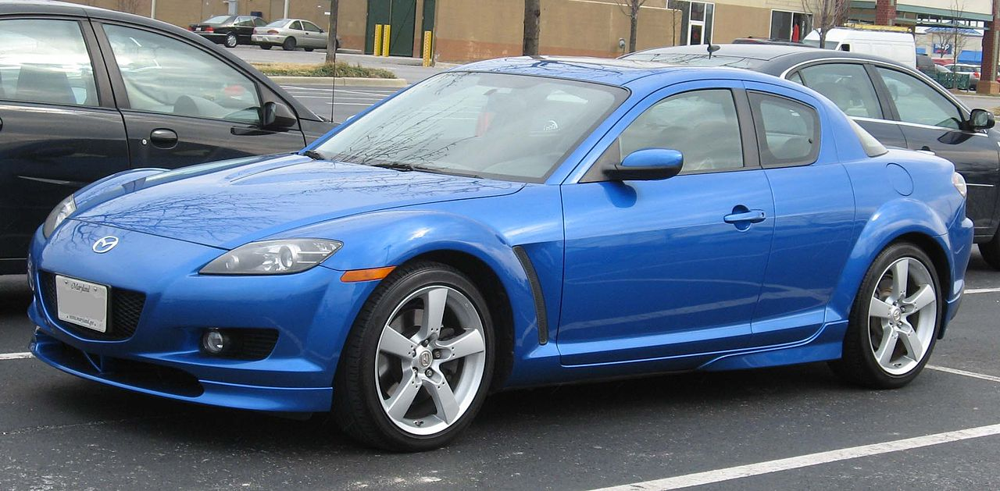

WEBCARS
Rx8

El Mazda RX-8 es un automóvil deportivo cupé de cuatro puertas con motor central-delantero montado longitudinalmente y tracción trasera, producido por el fabricante japonés Mazda desde el verano de 2002 hasta junio de 2012. Es el reemplazo del Mazda RX-7.